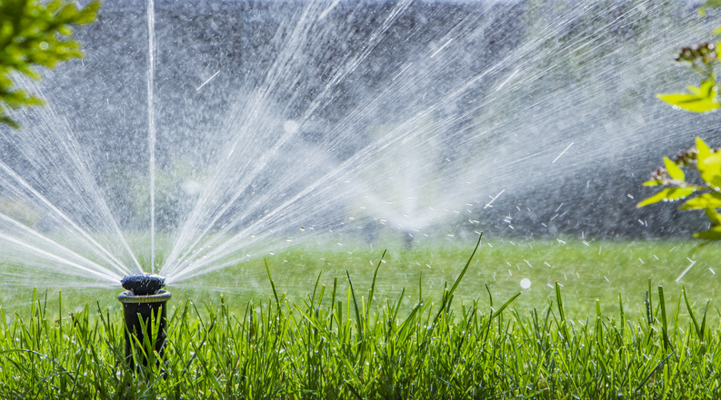
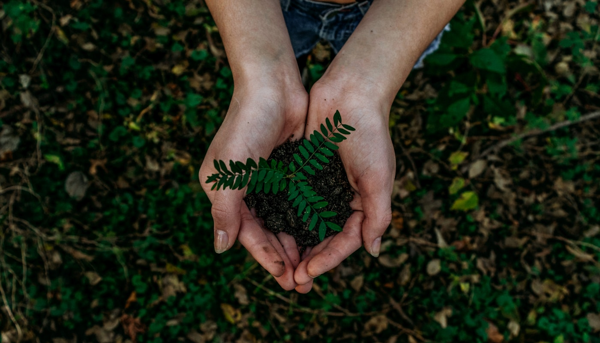

Lawn Maintenance
Weed Control & Fertilization
Sod Installation
Sanchez Landscape | Austin, TX
Serving since 2012
Professional landscaping, lawn care & design in Austin & Surrounding Areas
We transform your yard with passion and professionalism.
We quote in less than 36 hours
Full-service landscaping for homes and businesses in Austin & Surrounding Areas.




We treat every home like our own — dependable scheduling, honest estimates, and craftsmanship you can see from the curb.
Simple steps from first message to a yard you are proud of.
Fill out our form, call, or WhatsApp us. We respond with a detailed estimate within 36 hours.
We visit your property, discuss your vision, and create a custom plan that fits your budget.
Our crew handles everything from start to cleanup. Satisfaction guaranteed.
Sanchez Landscape began with a simple promise: treat every home like our own. Today we serve neighbors throughout Austin & Surrounding Areas with dependable scheduling, honest estimates, and craftsmanship you can see from the curb.
Whether you need weekly maintenance or a full redesign, we bring the same attention to detail and bilingual communication your family deserves.

Not sure if we serve your area? Call us: (512) 406-4698
Common questions about landscaping in Austin & Surrounding Areas.
The top grass varieties for Central Texas are Bermuda (excellent drought and heat tolerance), St. Augustine (thrives in shade, lush appearance), Zoysia (handles foot traffic and partial shade), and Buffalo grass (native, extremely low-water). Our team can recommend the best fit based on your yard's sun exposure, soil type, and usage.
Basic lawn mowing in Austin & Surrounding Areas typically starts around $45–$75 per visit, depending on lot size. Full landscape design and installation projects range from a few hundred dollars for small bed installations to several thousand for complete yard redesigns. We provide free, no-obligation estimates so you know the exact cost before any work begins. Browse our services or get in touch.
Yes — our entire team is bilingual in English and Spanish. We clearly explain services, pricing, and project scope in whichever language you're most comfortable with. Somos un equipo completamente bilingüe.
During drought conditions, most Central Texas municipalities allow watering once or twice a week. Water deeply (about 1 inch per session) in the early morning to reduce evaporation. We can install smart irrigation systems with soil-moisture sensors that adjust automatically and help you stay compliant with local watering restrictions. Learn more under Irrigation & lighting in our services.
Late winter (February–March) is generally the best time for most trees and shrubs in Central Texas, just before the spring growth flush. Avoid heavy pruning in late summer or fall. We assess each species individually — some flowering shrubs are pruned right after blooming. See Trees, design & seasonal for how we can help.
Both have advantages in Texas. Mulch retains moisture, enriches soil, and keeps roots cool — ideal for garden beds. Rock is permanent, requires no replacement, and pairs well with xeriscape designs. Many of our clients combine both: mulch around plantings and rock for pathways and decorative borders.
For newly built homes in Austin & Surrounding Areas, a typical project includes grading and soil prep, sod installation, an irrigation system, mulch beds, foundation plantings, and sometimes walkways or edging. We handle everything from design through final cleanup.
Fill out the quote form on this page, call us at (512) 406-4698, or message us on WhatsApp. We typically respond with a detailed quote within 36 hours.
Yes. We serve small businesses, HOA communities, and commercial properties throughout Austin & Surrounding Areas with recurring maintenance plans, seasonal cleanups, irrigation management, and full landscape installations. Explore all services we offer.
We serve Austin & Surrounding Areas. For the full list of neighborhoods and counties we cover, see our Areas We Serve section. Not sure if we cover your property? Give us a call.
We quote in less than 36 hours